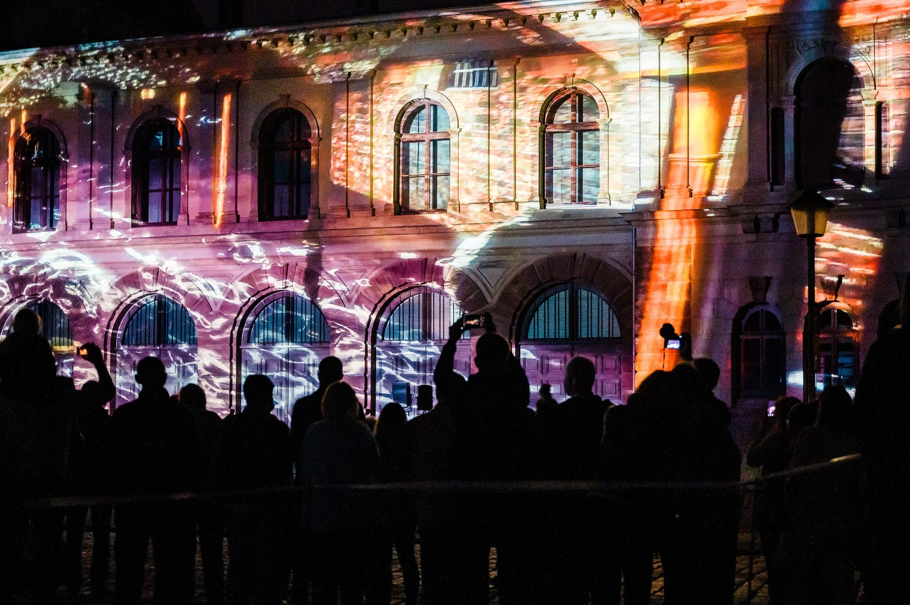
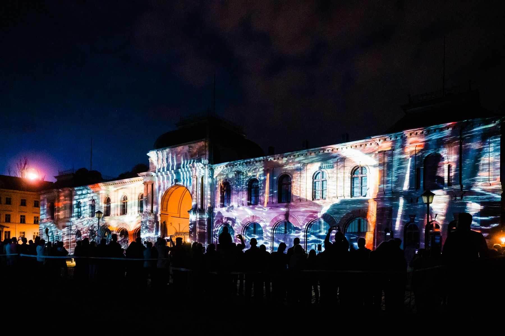
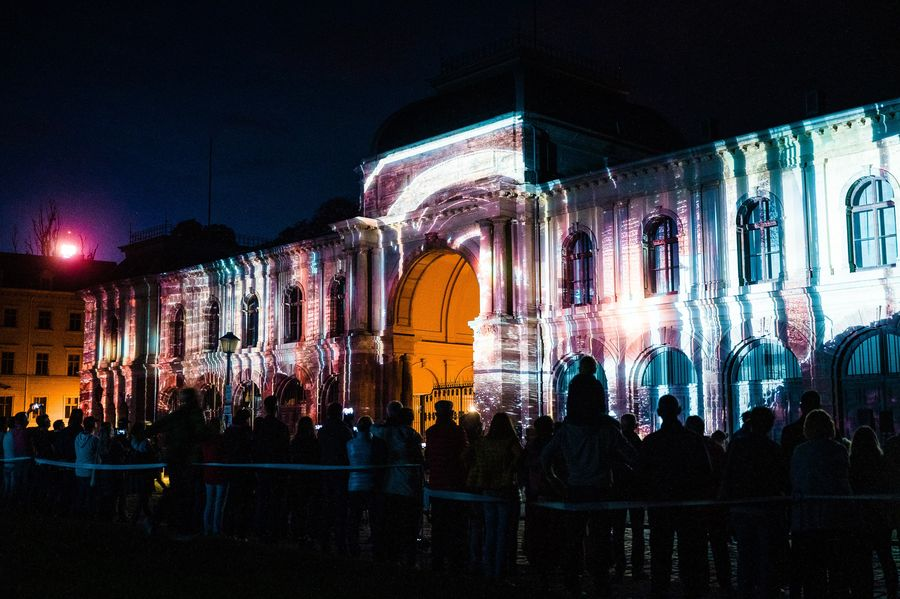
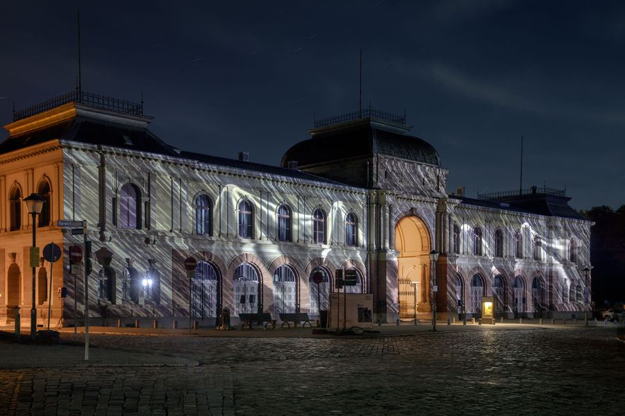
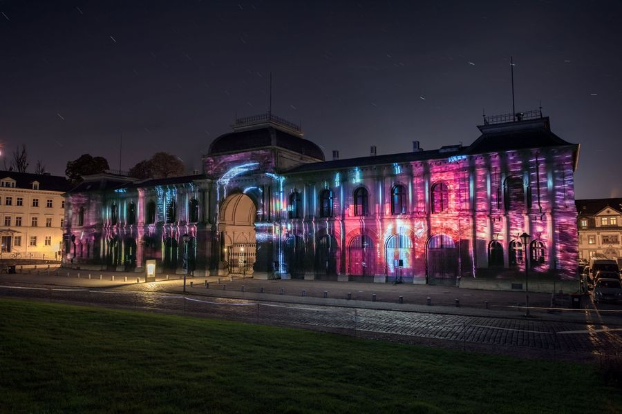
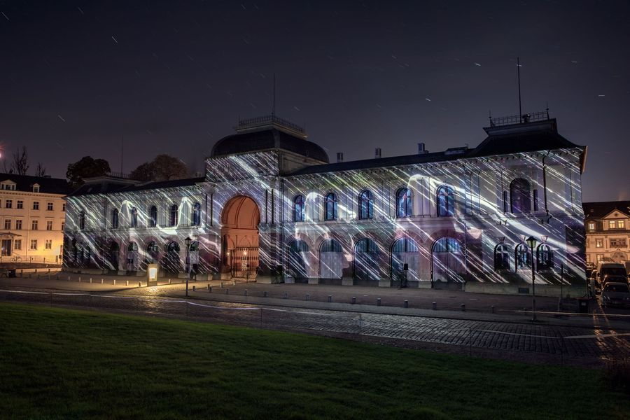
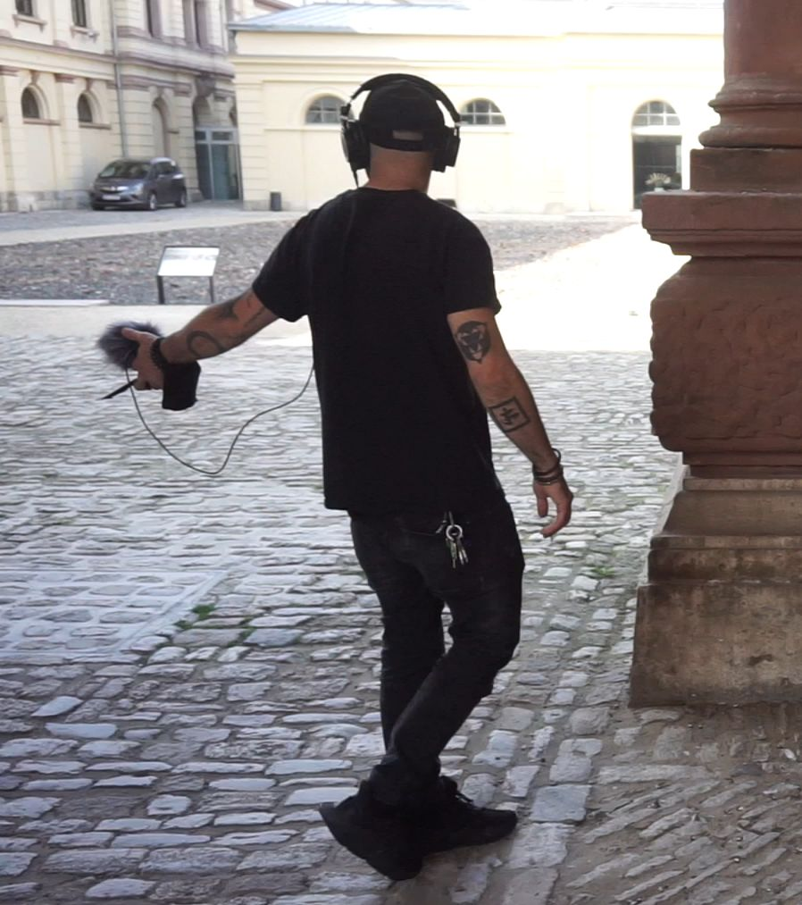
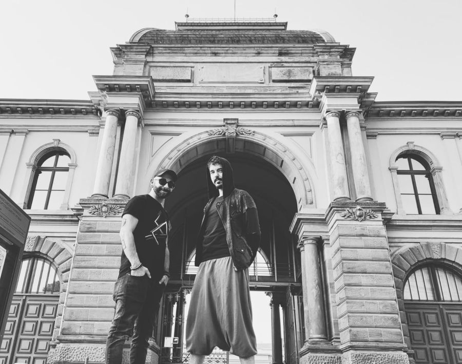
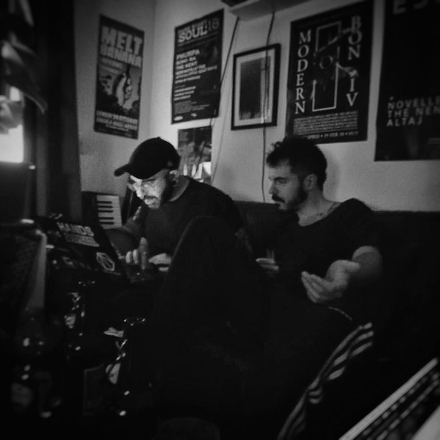

Inside
The Nent & Evestrum_AV — Genius Loci Weimar
In 2020, together with Vincenzo Gagliardi, I won the Genius Loci Weimar competition for a projection onto the Marstall palace — the festival's central building.
The piece looks into the memory of the building: from its Neo-Renaissance origins through to contemporary Weimar's return as a vital cultural centre in Germany. The facade is treated less as a screen and more as a section drawing — the projection cuts into it, exposing interiors, structural lines and the traces of what the building has held.
I wrote the score and did the projection mapping; Vincenzo made the video and 3D animation. We developed the concept together. Genius Loci is a festival I had already worked at for five editions as a media server operator — putting other artists' work onto these buildings — so getting to put my own on the Marstall meant something.
I returned to the festival in 2021 as a member of the jury.
- SiteMarstall palace facade, Weimar
- SelectionOpen competition winner, Genius Loci Weimar 2020
- SoundOriginal score and sound design — Evestrum_AV
- Video3D animation — The Nent, Vincenzo Gagliardi
- MappingProjection mapping and on-site calibration — Emanuele Musca








Credits
- ConceptVincenzo Gagliardi & Emanuele Musca
- Audio / sound designEmanuele Musca — Evestrum A/V
- Video / 3D animationVincenzo Gagliardi — The Nent
- Projection mappingEmanuele Musca
- FestivalGenius Loci Weimar 2020 — competition winner